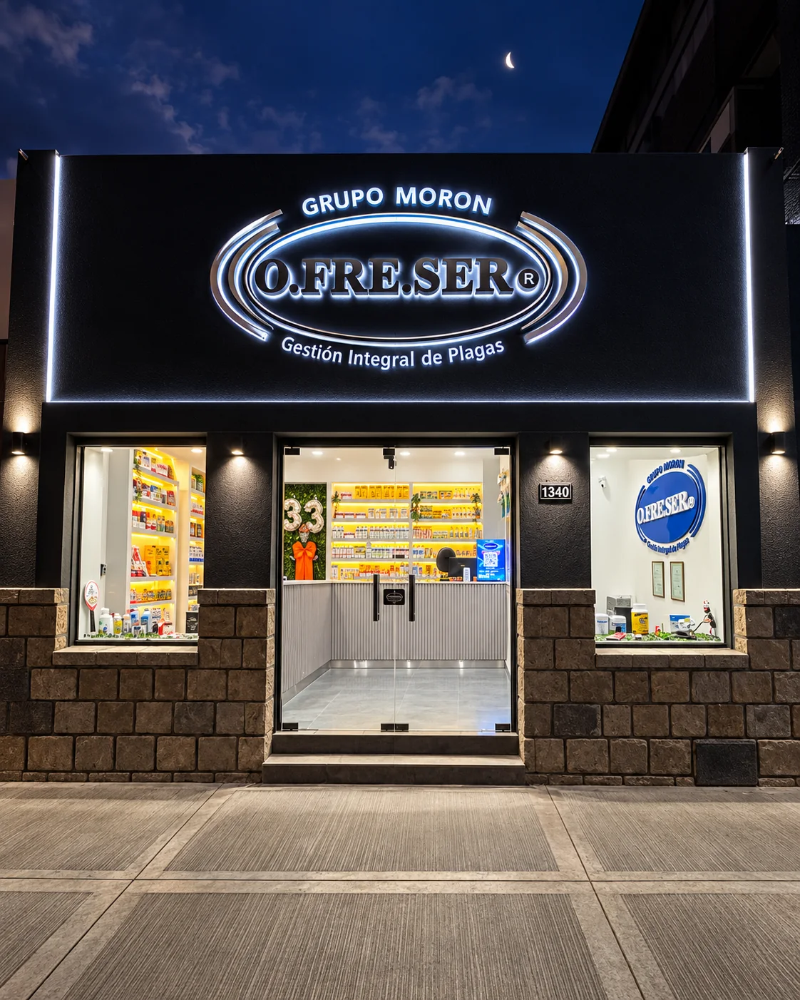
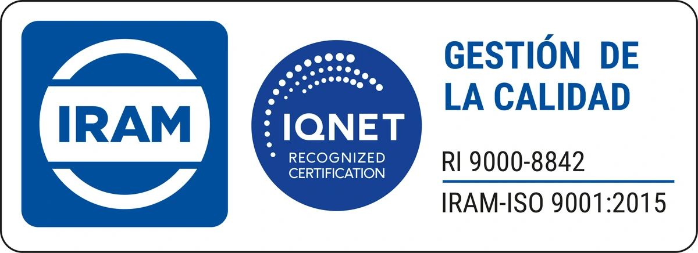
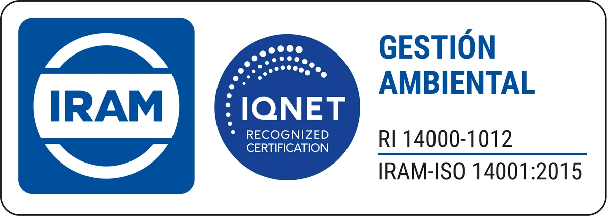
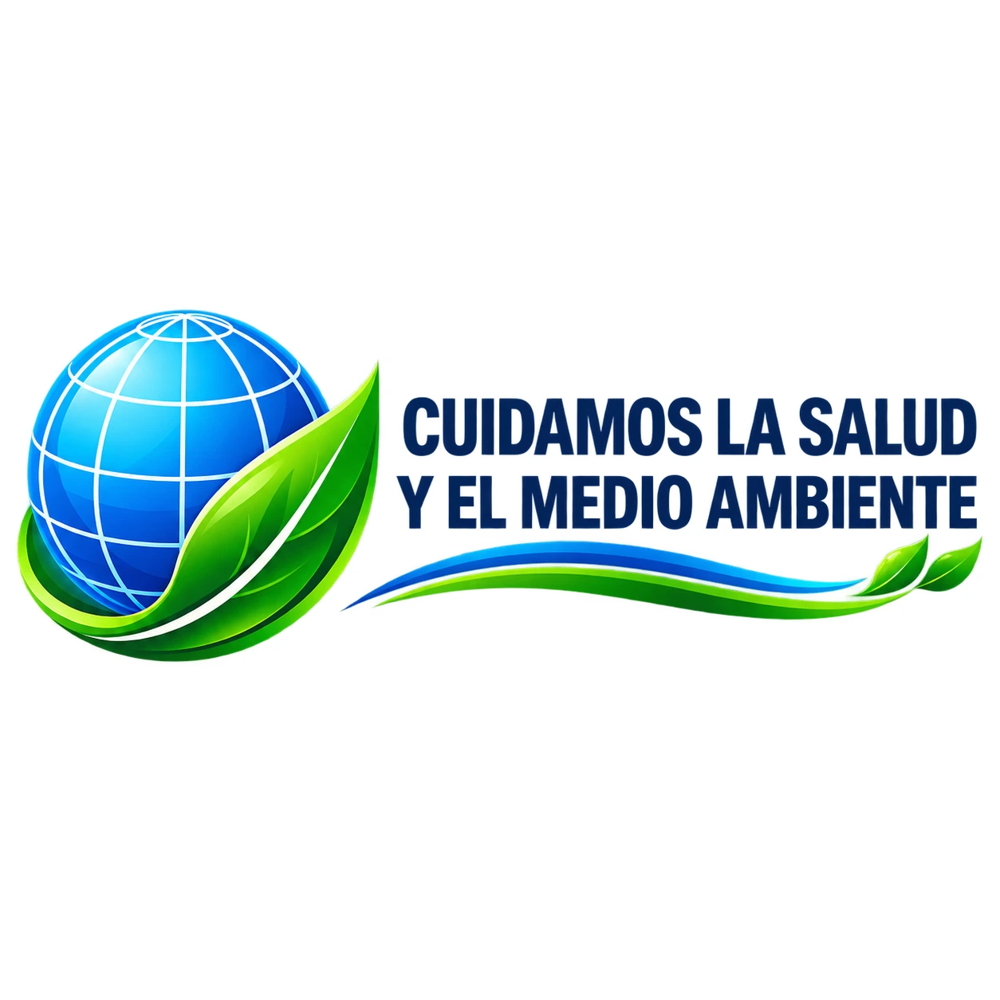

Sistemas de gestión que respaldan nuestra forma de trabajar.
O.FRE.SER integra calidad, prevención, trazabilidad y desempeño ambiental como parte de la planificación y mejora de sus servicios.

Certificaciones vigentes de O.FRE.SER.
Los sellos se presentan con sus datos completos para que el visitante entienda qué sistema de gestión respalda el servicio.

Gestión de la CalidadIRAM-ISO 9001:2015 · RI 9000-8842.

Gestión AmbientalIRAM-ISO 14001:2015 · RI 14000-1012.
Cuidamos la salud y el medio ambiente.
La gestión ambiental se traduce en prevención, evaluación del riesgo, monitoreo y mejora continua. En entornos complejos, reducir las condiciones que atraen fauna y actuar según evidencia ayuda a proteger personas, instalaciones y ambiente.

Qué significa para el cliente.
Una certificación tiene valor cuando se refleja en el trabajo diario y en la capacidad de demostrar qué se hizo y cómo se mejoró.
Procedimientos
Una forma de trabajo definida, revisable y mejorable.
Registros
Evidencia de servicios, hallazgos, dispositivos y acciones.
Capacitación
Formación y actualización del equipo.
Seguimiento
Monitoreo de resultados y necesidades del cliente.
Ambiente
Prevención y decisiones técnicas ajustadas al contexto.
Mejora continua
Corregir, aprender y fortalecer el sistema.